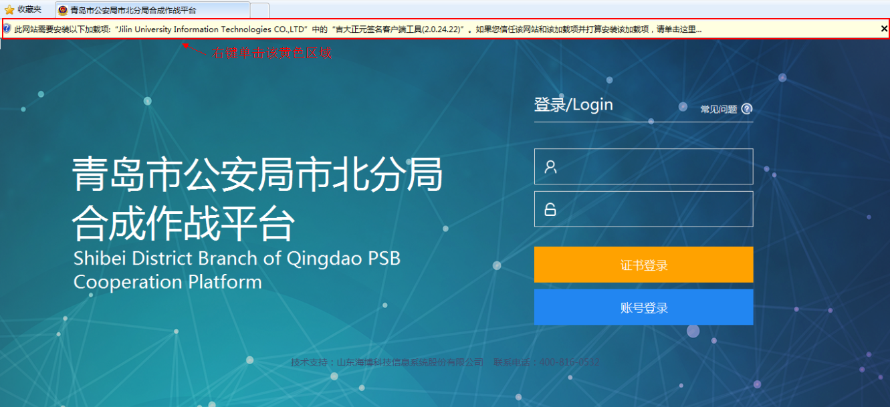
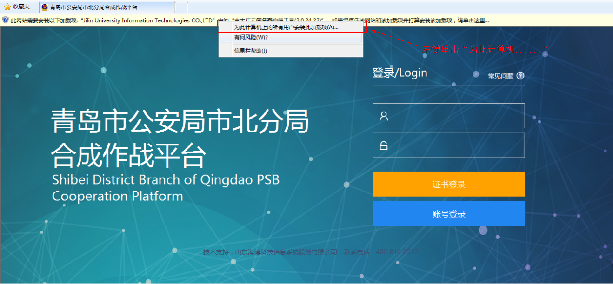
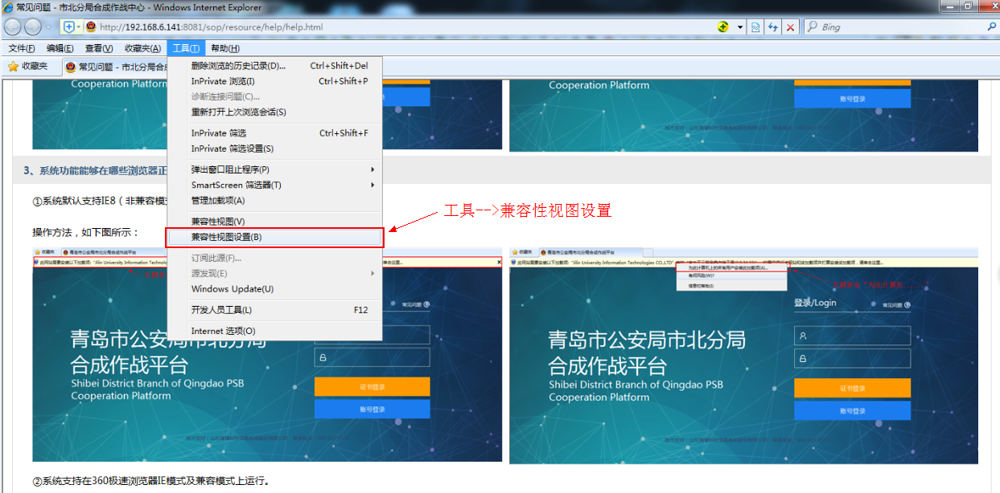
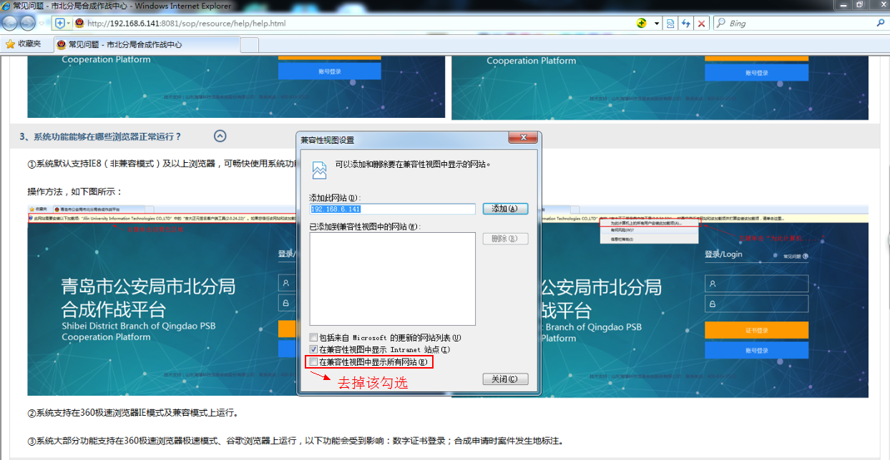
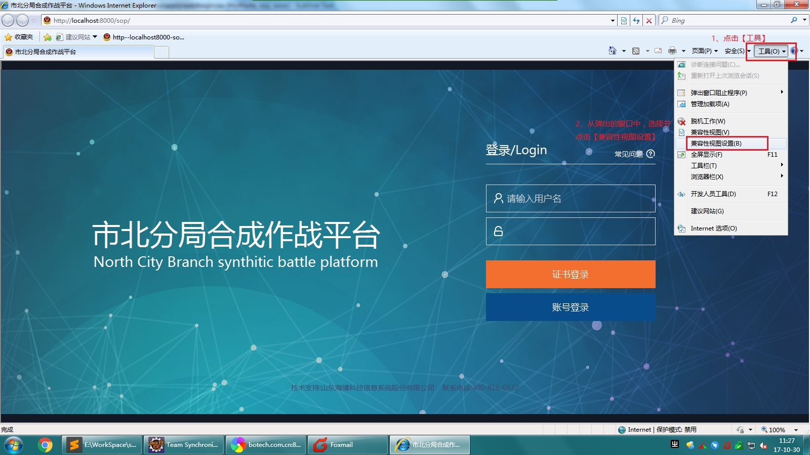
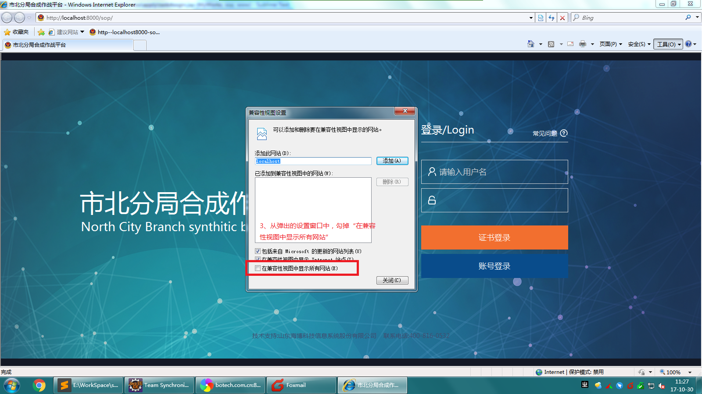
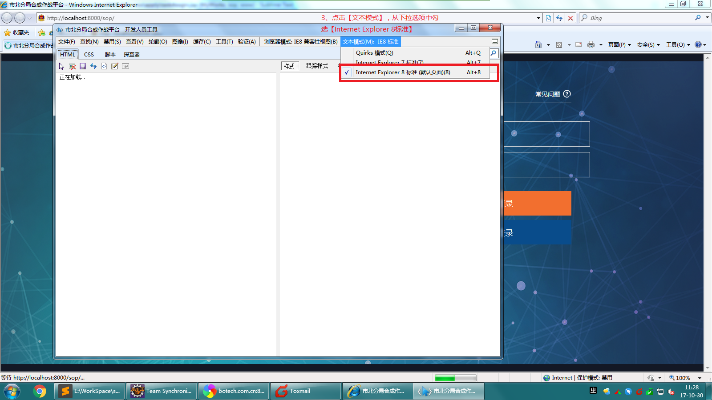
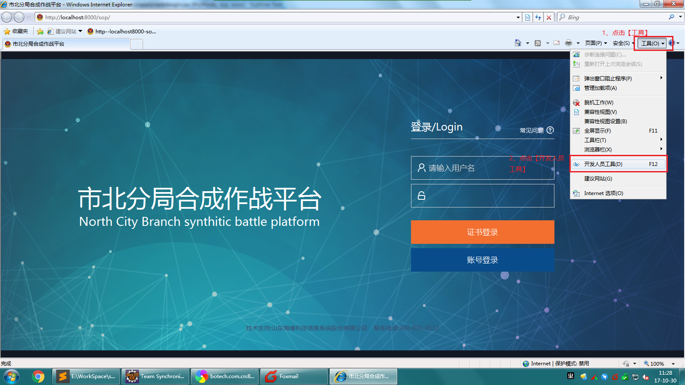

常见问题
1、初次使用合成作战平台，如何操作使用系统功能？
答：为了更好的使用系统，请点击下载平台用户手册，助您快速掌握系统用法。
2、使用数字证书登录不了系统，提示“请先安装数字证书插件”？
答：操作方法，如下图所示：
 
3、系统功能能够在哪些浏览器正常运行？
答：①系统默认支持IE8（非兼容模式）及以上浏览器，可畅快使用系统功能。
若使用IE浏览器，界面出现错位现象，请进行IE浏览器兼容设置，如下图所示：
 
②系统支持在360极速浏览器IE模式及兼容模式上运行。
③系统大部分功能支持在360极速浏览器极速模式、谷歌浏览器上运行，以下功能会受到影响：数字证书登录；合成申请时案件发生地标注。
4、如何处理登录系统后界面显示异常的问题，如聚集展示在左上角区域？
答：系统首页显示异常是因为浏览器版本过低或兼容性设置所置。若您所用IE浏览器为IE6或IE7，请 点击升级IE8浏览器或 点击下载谷歌浏览器安装；若您所用浏览器 是IE8及以上浏览器，请打开浏览器进行兼容性设置。
操作方法一，如下图所示：
 
操作方法二，如下图所示：
 
5、当您进行合成申请时，发现审批人非本单位领导，如何处理？
答：请确认系统登录后首页所显示的所在单位信息，若所在单位信息与目前所在单位不一致，请联系系统管理员进行处理，或拨打技术支持电话 400-816-0532
6、导出后的合成申请表与合成反馈报告标题字体无法满足规定要求，如何处理？
答：按规定要求，导出的申请表和反馈报告标题要求采用方正小标宋简体，若所用客户端无此字体， 请点击下载